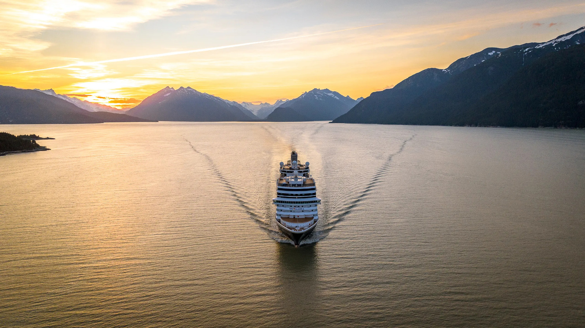
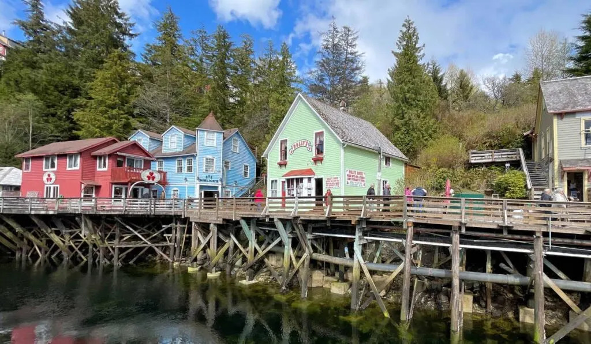
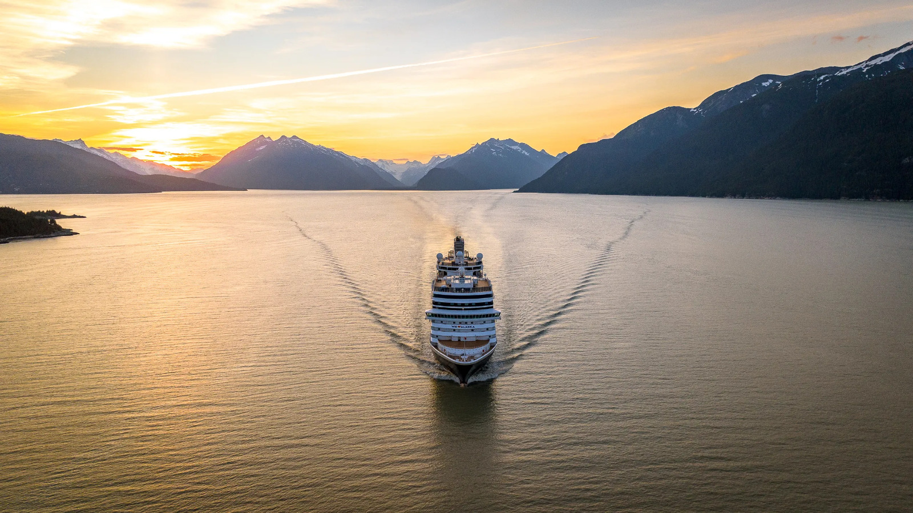
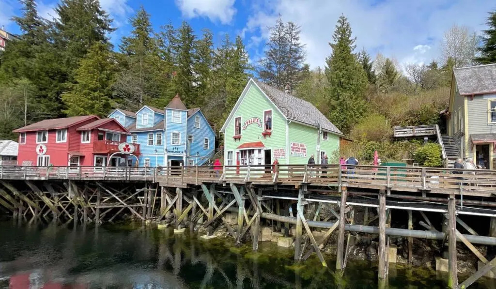

Grab this well-designed 8 nights, 9 days USA summer special tour package for a vacation like never before. This 9 days USA tour itinerary takes you to enthralling sites. This holiday takes you through heaving waters and treats you to an unparalleled cruise delight. Apart from a host of attractions, this USA holiday tour provides you with delish meals, splendid sightseeing, exciting activities, and comfortable stay onboard.
Your USA summer special tour package from India begins with arrival in Vancouver - a bustling west coast seaport in British Columbia is among Canada’s densest, most ethnically diverse cities. In this busy city, you will get an amazing chance to delight in a FlyOver Canada ride. The next day of your USA travel package takes you to a cruise experience but before that, you will be visiting Capilano Suspension Bridge in Vancouver. Inside Passage is the next attraction on your holiday tour. Marvel at glacier-cut fjords and lush temperate rainforests and passes through the rugged coast of Southeast Alaska.
Up next, you will be exploring the charisma of Tracy Arm Inlet. Here, the sight of Salmon Fish Hatchery, Glacier Garden, and Mendenhall Glacier will keep you intrigued. The delight of your package holiday to the USA next introduces you to the charm of Glacier Bay National Park - a UNESCO World Heritage Site. This is among the largest biosphere reserves on earth. So, what are you waiting for? Choose from a host of tour packages to USA and book one that best suits your pocket and preferences for a commendable vacation.
Your KW brings you to Vancouver Once you reach Vancouver, get transferred to the hotel and check-in. Get over the jet lag and freshen up as you will be taken for a joyride like never before. Head to FlyOver Canada to savor this experience. As you take off, the feeling of flight wraps you as you hang suspended, feet dangling, before a 20-meter spherical screen while the film whisks you away on an exhilarating journey across Canada, from east to west. Special effects, including wind, mist, and scents, blend with the ride’s motion to create an unforgettable experience. After an enthralling experience, come back to the hotel for a soothing sleep.
Embark on a cruise to explore Alaska as per this KW Savor a lovely breakfast and checkout from the hotel. Now, visit Capilano Suspension Bridge. After visiting this attraction, board a cruise that will take you to Alaska. Delight in sailing through the regions of British Colombia - Canada's westernmost province, defined by its Pacific coastline and mountain ranges. Later, enjoy dinner served onboard and as the waves sing you lullabies, sleep peacefully onboard.
Explore the scenery around as per this KW Wake up to a wholesome breakfast and soak in the mesmeric scenery around. Today, you will be introduced to Alaska’s Inside Passage, which is a protected network of waterways. The network winds through glacier-cut fjords and lush temperate rain forests and passes through the rugged coast of Southeast Alaska. As you sail through Inside Passage, get ready for a rendezvous with some of Alaska’s most iconic wildlife. Sailing and exploring, you will enjoy the day onboard. When the moon pops up, savor dinner and sleep restfully on the cruise.
Delight in an amazing leisure day according to this KW Relish a sumptuous breakfast and indulge in an amazing day onboard as the entire day is at leisure. You can partake in various activities onboard such as swimming, sampling world famous Alaska seafood, and be relaxing on the deck. Delight in a soothing sunset. As the evening deepens, enjoy karaoke show and live performances. Later, satiate your hunger pangs with a delectable dinner and sleep onboard.
Explore the charisma of Tracy Arm Inlet with this KW Kickstart your day with a lovely breakfast and be prepared to explore the unparalleled charm of Tracy Arm Inlet. Glacier-carved cliffs, spectacular waterfalls and exciting close-up views of the majestic Sawyer Glaciers make your day truly pleasurable. You can also enjoy various activities at Tracy's arm on your own. Thereafter, your cruise continues to sail towards Juneau - a popular cruise-ship stop and Alaska’s remote capital. Its mountains, Fjords, flora, fauna, and scenic beauty makes it an unmissable attraction. Salmon Fish Hatchery, Mendenhall Glacier, waterfall, and Glacier garden here keep you intrigued. After a day amidst scenic expanses, dig into a delectable dinner, followed by a sound sleep onboard.
Get ready for a scenic cruising as per this KW Arise among the heaving waters and 'break' your night long 'fast'. Now, you will be sailing through Glacier Bay National Park. This is a this UNESCO World Heritage Site and a vast area of southeast Alaska's Inside Passage, a coastal route plied by cruise ships and other vessels. Stretching north of the town of Gustavus, the bay is flanked by high peaks, including Mount Fairweather, and glaciers like the huge Grand Pacific Glacier. Glacier Bay has more actively calving tidewater glaciers than any place else in the world. In addition, this is among the largest biosphere reserves on earth. A dramatic landscape is sculpted with ice, stone, and water. Whenever a colossal mass of ice falls apart the glacier and slips into the sea, the water shoots up hundreds of feet with thunder. The sight is breathtaking and experience is overwhelming. It is a marine park, where great adventure awaits by boating into inlets, coves and hideaway harbors. Once you are spellbound with nature’s charisma, refuel with a hearty dinner and sleep restfully onboard.
A fun-filled day as planned by KW Relish a nutritious breakfast as you enter Ketchikan, also known as the First City of Alaska. This is an important hub of the salmon-fishing and packing industries. Here, you can watch Lumberjack Show - the battle of Canadian Lumberjacks in chopping wood, sawing, tree climbing, axe throwing, log rolling and much more. You can also choose to partake in various excursions here such as adventure tour, cruise tour, and sightseeing. After a splendid day, treat your taste buds to a scrumptious dinner and a restful sleep onboard.
Indulge in a scenic cruise as planned by this KW Once you have enjoyed a delicious breakfast, proceed to visit Inside Passage. The attraction is formed by the staggering force of massive glaciers and boasts of wildlife-filled fjords and lush island scenery. Mountains of this hotspot are covered by luxuriant woods and are home to Haida, Tlingit, and Tsimshian Indians. The place is also dotted by onion-domed churches left by Russian settlers that gleam with icons. Once the day has fascinated you with its attractions, relish dinner and slip into your cozy beds onboard for the night.
The trip concludes Relish breakfast and disembark from the cruise. Now, you will be transferred to Vancouver airport. Board your flight back home with fond memories.